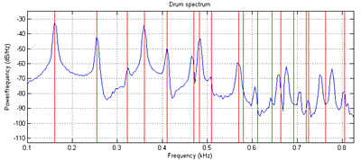

For this exercise, you will simulate the 2D wave equation on a square mesh in realtime to produce drum-like sounds.
Procedure:
Read Study Notes on Numerical Solutions of the Wave Equation with the Finite Difference Method. The main result you will need to simulate is equation 2.18. A matlab program gives a sequential version of the algorithm and plots the Fourier modes of the drum. Another version is tuned to middle C (261 Hz). You can see in the figure below that the simulated sound spectrum (blue) matches the theoretical drum modes (red) up to about mode 8 or 9 (see Physical modeling with a 2D waveguide mesh for details) . The theoretical square drum mode frequencies follow the ratio sequence:
sqrt(m+n) where m,n=1,2,3,...
Where the first term (sqrt(2)) corresponds to the fundamental mode of the drum.
The first few modes are sqrt(2), sqrt(5), 2*sqrt(2), sqrt(10), sqrt(13), sqrt(17), sqrt3*sqrt(2).

Modifying the boundary conditions, damping, wave speed, drum size, and distrubution of input energy can modifiy the sound of the simulation from drum-like, to chime-like, to gong-like or bell-like. You can modify the program further to include frequency-dependent damping and other effects. This version simluates a long, thin bar struck at one end.
You will probably want to read
for ideas on parallelization.
The hardware audio interface is a Wolfson WM8731 codec which is controlled by an I2C interface. I have simplified the drivers somewhat. The cleanest version is in this project zip. The context for the drivers is explained in the DSP page, example 1. The audio codec produces (and outputs) 16-bit 2's complement numbers. The 16-bit numbers should be considered as fractional values in the range +1 to -1 volt.
Student examples running on FPGA:
(number of wave equation nodes)*(audio sample frequency) 10*(number of wave equation nodes)*(audio sample frequency) . 1000x44000=44x106 operations/second. For a more accurate 20x20 grid you will need ~200x106
operations/sec. Clearly some parallel processing will be necessary.
Be prepared to demo your design to your TA in lab.
Your written lab report should include the sections mentioned in the policy page, and :
{kind=link}